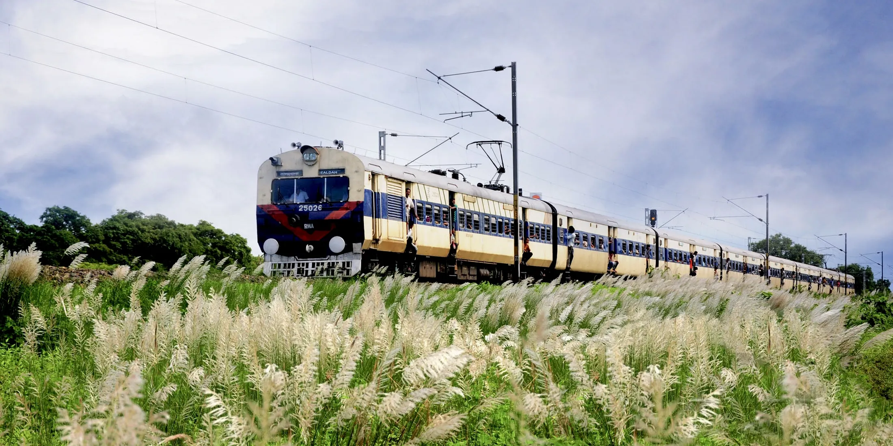
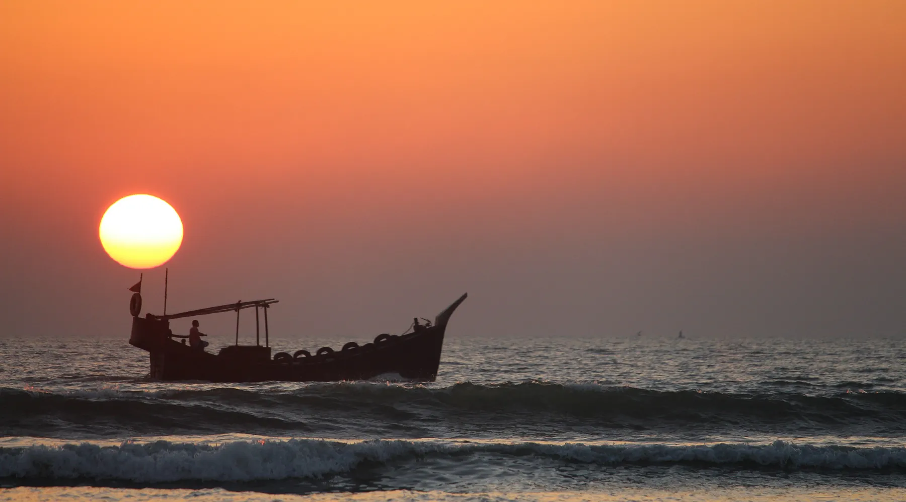
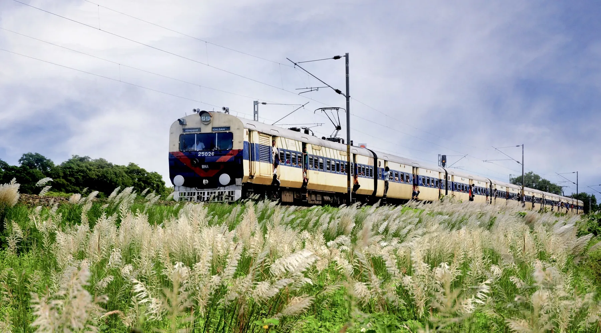
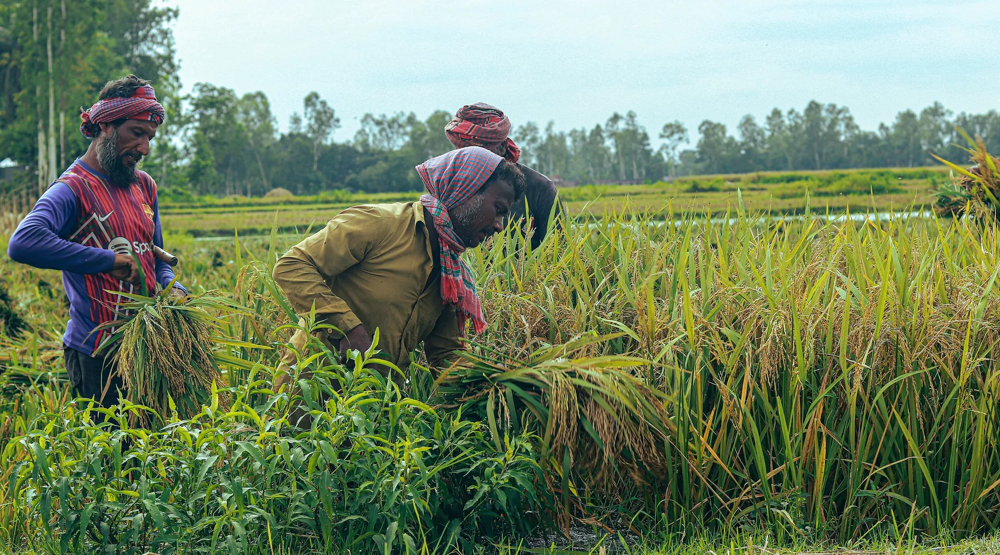
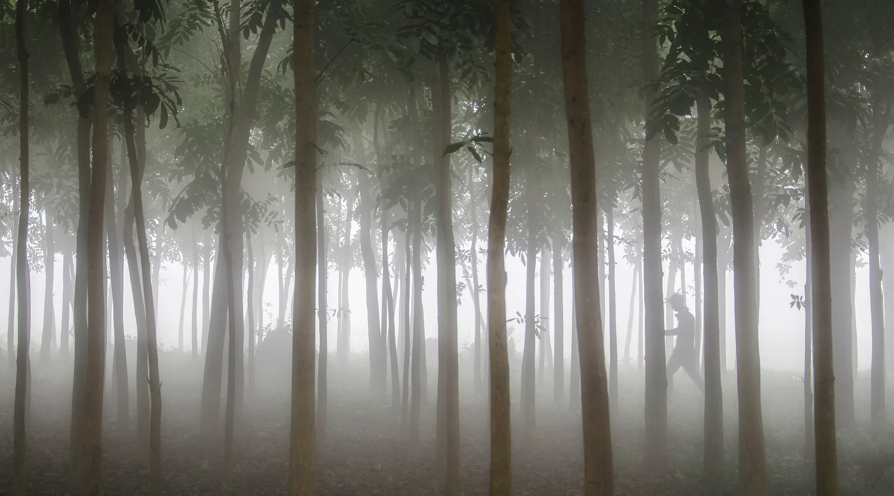
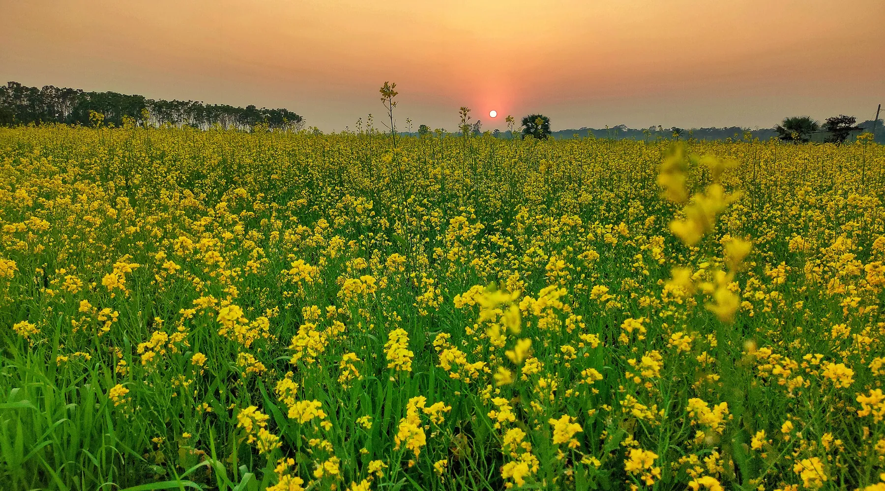

The Bengali calendar divides the year into six seasons of two months each, and they are not decorative. Each one genuinely changes what the country looks like, what it eats, what it celebrates and how you travel through it.
The same forest you row a boat through in July can be walked in January. The same field that is under a metre of water in August is gold with rice in November. Pick the season, then pick the place, not the other way round.
Right now it is Monsoon. Each panel below can take over the whole site.

Mango season. The heat sits on the north at 38 degrees and half the country lives on fruit.
Jackfruit splits open on the tree, lychees come down from Dinajpur, and the honey collectors go into the Sundarbans with smoke and a knife. Long days, hard light, and everything worth doing happens before ten in the morning or after five in the afternoon.
Best in Rajshahi, Chapainawabganj, Sundarbans

The rivers double in width and the whole delta floats. This is the season the country was built for.
Ratargul swamp forest goes under twenty to thirty feet of water and you row through the canopy. Boat racing starts. The waterfalls in Bandarban run at full volume. Rain arrives in heavy bursts rather than all day, and the light afterwards is extraordinary.
Best in Sylhet, Bandarban, Barishal

White kash flowers riot along every riverbank under a sky scrubbed clean.
The sharpest light of the year: towering clouds with hard blue between them. Kash grass flowers on the newest land in the country, the sandbars the rivers laid down last season, and it is over in a fortnight. Floating markets are at their best.
Best in Padma banks, Barishal, Dhaka

Harvest. The paddy goes gold, the air smells of new rice, and the villages hold pitha nights.
Mild, dry and the easiest window for a first trip. Nabanna, the new rice festival, moves through the villages. The first migratory birds drop into the wetlands. Almost nobody outside Bangladesh has heard of this season, and it may be the best one.
Best in Rangpur, Bogura, Sylhet

Fog on the wetlands, date palm sap dripping into clay pots, birds by the hundred thousand.
Cool, dry and clear once the morning fog lifts. Peak season for heritage, hill trekking and birdwatching. Paharpur at seven in the morning, with the fog still sitting on the monastery, is the photograph of the year.
Best in Naogaon, Sylhet, Bandarban

Palash and shimul burn red across bare branches and the whole country goes outdoors.
Warm days, flowering trees, and the densest festival month of the year: Pohela Falgun, the Ekushey book fair spread across Dhaka University, Shivratri at Chandranath. Mustard fields are still yellow in the first weeks and everyone wears yellow with them.
Best in Dhaka, Sitakunda, Srimangal